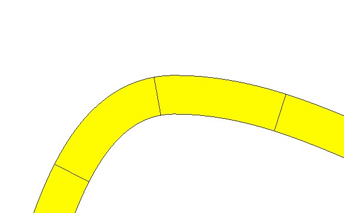

как создать хитрую линию
adda84 / 14.12.2012, 12:10
Форум:
Версия программы:
15.2.0.661 (sp2)
как получить результаты на картинке (интересует полуавтоматический режим, а не ручками полоски в разных слоях)

как получить результаты на картинке (интересует полуавтоматический режим, а не ручками полоски в разных слоях)
Абрис - цвет, заливка - цвет.
Легко Не выделяя объекта, щёлкаете на палитре цветов. Левая клавиша - объект, правая - контур. Корел выдаст менюшку с предложением установить данный цвет по умолчанию для всех новых объектов. Подтвердить и работать. Убирается / изменяется цвет по умолчанию тем же образом.
Толщина абриса по умолчанию задаётся подобным же образом.
Без выделения объекта нажимаем клавишу F12 (или открываем свойства Outline на панели инструментов). Корел снова выдаст менюшку с предложением установить данные свойства контура по умолчанию для всех новых объектов.
Выбираем толщину (там же можно установить и цвет) и подтверждаем. Изменить\убрать заданные свойства - повторить операцию.
По остальным моментам дождитесь консультации специалистов.
Создание сложной штриховой линии с окантовкой
1. Создайте два дубля исходной линии.
В который раз повторюсь, как во всех моих уроках, о том, что здесь, как и во многих случаях полезно настроить смещение копии равным нулю (в соответствующих окошках на панели свойств в режиме инструмента Указатель).
2. Первой дублированной линии задайте нужные цвет и толщину, например жёлтый и 2,5 мм. Второй дублированной линии задайте нужные цвет и толщину, например чёрный и 3 мм.
3.Теперь надо определиться с толщиной штрихов, перерезающих жёлтую линию.
Будем исходить из того, что толщина штрихов должна быть такой же, как толщина чёрных кантов, окаймляющих жёлтую линию. В данном примере:
(3 — 2,5) / 2 = 0,25 мм
Создадим для кисти типа Аэрозоль один такой штрих (штрих должен быть ориентирован вертикально и длина его должна быть несколько большей, чем самая жирная из однопипных линий, чтобы кисть подходила для разных случаев; кстати, если в других случаях толщина штрихов должна быть другой, то всё равно можно будет использовать эту кисть, а как скорректировать эту толщину, будет указано позже.
Выберите интрумент Кисть, тип кисти Аэрозоль, откройте раскрывающийся список кистей и щёлкните по строке «Новый список». Курсором в виде кисти щёлкните по заготовке штриха, теперь станет активной кнопка «Добавить в список». Щёлкните её, а затем кнопку «Сохранить» и, задав имя, сохраните.
Удалите заготовку штриха.
4. Выбирете инструмент Кисть, тип Аэроозоль, в раскрывающемся списке — ваш Штрих и курсором в виде кисти ткните в опорную линию, затем на панели свойств в окошке «Выбор» выберите «По указанию». Затем нажмите кнопку «Вращение» и в раскрывшемся меню выберите «Относительно пути». В окошке «Интервал» установите шаг, с которым будут следовать штрихи, например 4 мм.
Теперь выделите путь вместе с применённой кистью и разъедините.
Полученную группу разгруппируйте и объедините в один объект.
Удалите опорную кривую.
ВНИМАНИЕ! Вот здесь, на данном этапе можно скорректировать толщину штрихов, задавая полученному объекту нужную толщину.
Теперь переведите полученный объект из абриса в объекты.
5. Жёлтую линию также переведите из абриса в объекты.
6. Выделите полученный объект (штрихи) и жёлтую линию и примените команду задние минус передние» (предполагается, что штрихи расположены в структуре слоёв выше жёлтой линии).
Это всё.
На самом деле, по вопросам 1 и 2, лично я бы советовал делать не аэрозольную, а растягивающуюся кисть. То есть, нарисовать линейку из нужного количества жельых прямоугольничков или штрихпунктирных линий, а потом назначить его растягивающейся кистью и применить к кривой.
Что значит нужное количество штрихов?
Посмотрите на рисунок в примере. Ясно, что речь идёт о картографии. Если эта линия — какая-нибудь дорога или граница, что вам делать нечего, штришки на этой дороге считать?
А если кисть с прямоугольничками, то зазоры между ними на изгибах линии будут клиновидные.
Всегда говорю, прежде чем что-либо советовать, сами попробуйте.
Именно потому и советую, что сам так делаю. Задача стояла - как сделать конкретный пример и я на нее отвечаю. Причем,мой способ проще и удобнее, вместо двух объектов получается одна связная линия, на которой можно даже узлы редактировать, что при вашем способе достаточно затруднительно. Пример со штрихпунктирной линии (2) аэрозольной кистью сделать вообще неимоверно сложно и неудобно - только моим способом. Разумеется, в мире нет совершенства и за все приходится платить. В данном случае на каждую линию придется делать свою кисть соответствующейдлины. Но это достаточно мелкое неудобство по сравнению с последующим удобством редактирования полученной кривой. В конце концов, можно, к примеру, макросом автоматизировать.
Да ну?

Можно и обычную кисть сделать, если задача — нарисовать какую-нибудь ленточку на гербе.
Но в случае отрисовки карт, делать для каждой отдельной линии кисть, де ещё подсчитывать число штрихов на ней — это просто неверный подход к решению задачи.
Страницы